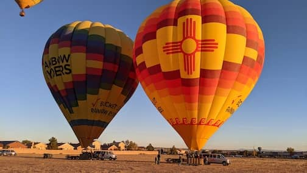
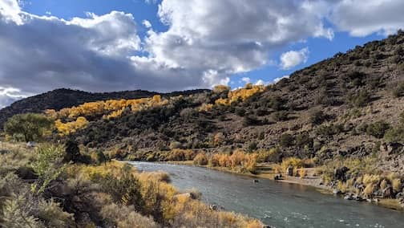
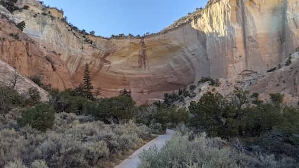
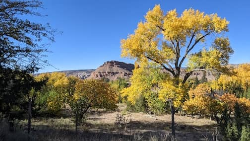
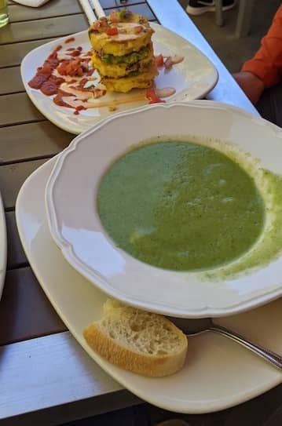
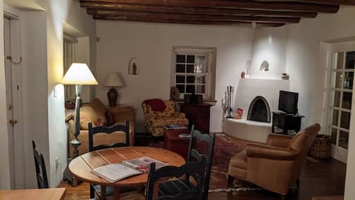
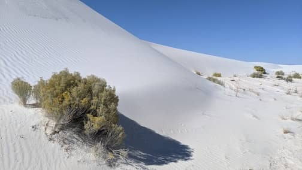

New Mexico
Oct 20 - 27
7 day roadtrip in New Mexico.
We stayed at Albuquerque and Santa Fe. Majestic views of Rio Grande, Cottonwood trees with its radiant shades of yellows. We visited Taos, White Sands National Park and Ghost Ranch.
So little traffic, I was not aware I was speeding. The nice highway patrol cop let me go with a smile.
So little crowd, except when 12 people were standing shoulder to shoulder in the basket of our hot air balloon.
 The hot air balloon ride was surprisingly slow and relaxing
 Beautiful Rio Grande
 Echo Amphitheater. Fun stop on our way to Ghost Ranch
 Cottonwoods with their yellow golden leaves were everywhere
 Pleasant lunch of cucumber mint soup and corn cakes at Cafe Abiquiu
 Our adorable adobe style airbnb
 White Sands National Park